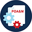

<div class="page-banner">
<h1> {{ page.title }}</h1>
</div>
<div class="usa-grid usa-section usa-content">
  <div class="usa-width-three-fourths usa-content">
  {% if page.image %}
  
  {% endif %}
  {{ content }}
  </div>
  <aside class="usa-width-one-fourth">
<div class="dashboard">
<div class="inner">
<h4>WHAT ARE YOU LOOKING FOR?</h4>
<p>Click the actions below for all the resources you need</p>
<ul class="assessors">
<li><a href="{{site.baseurl}}/learning-more-about-fedramp">Learning More About FedRAMP</a></li>
<li><a href="{{site.baseurl}}/conducting-a-readiness-assessment">Conducting a Readiness Assessment</a></li>
<li><a href="{{site.baseurl}}/supporting-a-jab-authorization">Supporting a JAB Authorization</a></li>
<li><a href="{{site.baseurl}}/supporting-an-agency-authorization">Supporting an Agency Authorization</a></li>
<li><a href="{{site.baseurl}}/supporting-a-fedramp-tailored-authorization">Supporting a FedRAMP Tailored Authorization</a></li>
<li><a href="{{site.baseurl}}/understanding-security-package-development">Understanding Security Package Development</a></li>
<li><a href="{{site.baseurl}}/reviewing-a-system-security-plan">Reviewing a System Security Plan</a></li>
<li><a href="{{site.baseurl}}/developing-a-security-assessment-plan">Developing a Security Assessment Plan</a></li>
<li><a href="{{site.baseurl}}/developing-a-security-assessment-report">Developing a Security Assessment Report</a></li>
<li><a href="{{site.baseurl}}/validating-a-plan-of-actions-milestones">Validating a Plan of Action and Milestones</a></li>
<li><a href="{{site.baseurl}}/receiving-an-authority-to-operate">Receiving an Authority to Operate (ATO)</a></li>
<li><a href="{{site.baseurl}}/conducting-continuous-monitoring">Conducting Continuous Monitoring</a></li>
<li><a href="{{site.baseurl}}/completing-an-annual-assessment">Completing an Annual Assessment</a></li>
</ul>
</div>
</div>
    <div class="blog-sidebar">
    <h3>Recent Posts</h3>
    <ul>
      {% for post in site.posts limit:5 %}
        <li>
          <a href="{{ post.url | prepend: site.baseurl }}">{{ post.title }}</a>
        </li>
      {% endfor %}
    </ul>
    </div>
  </aside>
</div>
</div>
